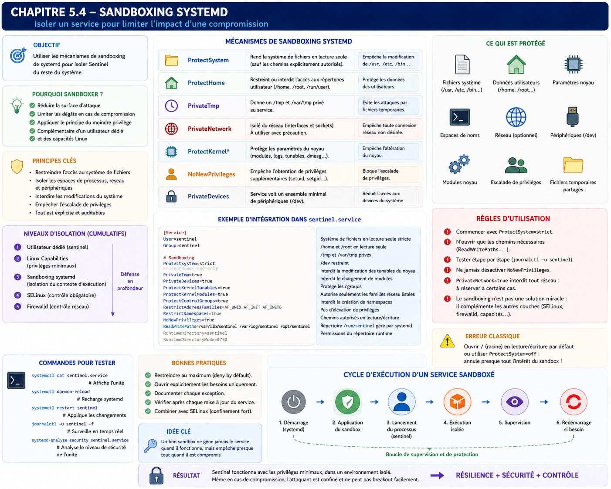

Chapitre 5.4 — Sandboxing systemd
Campagne 5 — systemd et services
« Le meilleur code est celui qui n'a jamais accès aux ressources dont il n'a pas besoin. »
Vous êtes ici
Partie I — Construire un socle sécurisé
Campagne 5 — systemd et les services
5.1 Comprendre systemd
5.2 Les unités (.service, .socket, .target…)
5.3 Créer le service Sentinel
► 5.4 Sandboxing systemd
5.5 Capacités Linux
5.6 Journalisation avec journald
5.7 Supervision et redémarrage automatique
5.8 Mission : rendre Sentinel résilient
Objectifs pédagogiques
À la fin de ce chapitre, vous serez capable de :
- comprendre ce qu'est le sandboxing proposé par systemd ;
- distinguer le sandboxing systemd d'un conteneur Podman ;
- réduire drastiquement la surface d'attaque d'un service ;
- appliquer le principe du moindre privilège directement au système d'exploitation ;
- construire progressivement une unité Sentinel fortement durcie.
Pourquoi ce chapitre existe
Nous avons créé un service. Il fonctionne. Il démarre automatiquement. Il redémarre après un crash. Il produit des journaux. Pour beaucoup d'administrateurs, le travail est terminé. En réalité... nous n'avons encore quasiment rien fait du point de vue de la sécurité. Prenons un scénario. Une vulnérabilité RCE est découverte dans Sentinel. L'attaquant parvient à exécuter :
os.system(...)
Que peut-il faire ? La réponse dépend entièrement des privilèges accordés au processus. Si Sentinel possède accès :
- à tout le système de fichiers ;
- aux répertoires utilisateurs ;
- aux périphériques ;
- aux namespaces ;
- aux appels système sensibles ;
alors la compromission devient extrêmement grave. Notre objectif est donc simple. Même si Sentinel est compromis, nous voulons limiter au maximum ce que l'attaquant pourra faire. C'est exactement le rôle du sandboxing systemd.
Théorie détaillée
Qu'est-ce que le sandboxing ?
Le mot sandbox signifie littéralement : Bac à sable L'image est particulièrement parlante. Un enfant peut jouer librement. Mais uniquement à l'intérieur du bac. Il ne peut pas accéder :
- au jardin ;
- à la route ;
- au garage.
Le principe est identique en sécurité informatique. L'application peut fonctionner. Mais uniquement dans un environnement volontairement limité.
Une nouvelle philosophie
Historiquement, la sécurité Linux reposait principalement sur :
- les permissions UNIX ;
- les utilisateurs ;
- les groupes.
Par exemple.
Cette approche reste indispensable. Mais elle n'est plus suffisante. Aujourd'hui, le système d'exploitation est capable d'imposer des restrictions beaucoup plus fines. systemd exploite pour cela plusieurs mécanismes du noyau Linux. Par exemple :
- namespaces ;
- cgroups ;
- capabilities ;
- protections du système de fichiers ;
- filtres d'appels système.
Toutes ces fonctionnalités sont accessibles avec quelques directives extrêmement simples.
Une défense supplémentaire
Le sandboxing ne remplace jamais :
- SELinux ;
- Firewalld ;
- les permissions Linux ;
- les capacités.
Il ajoute une nouvelle couche. Prenons Sentinel. Avant.
Après.
Chaque couche limite un peu plus les possibilités de l'attaquant.
Pourquoi systemd ?
Une question revient souvent. Pourquoi utiliser le sandboxing de systemd alors que SELinux existe déjà ? Parce que les deux répondent à des besoins différents. systemd permet d'exprimer très simplement des contraintes comme :
Ce service
n'a jamais besoin
d'écrire dans /usr.
Ou :
Ce service
n'a jamais besoin
d'accéder aux répertoires utilisateurs.
Ou encore :
Ce service
n'a jamais besoin
de créer un namespace.
Ces décisions appartiennent directement au contrat d'exploitation. Il est donc logique qu'elles figurent dans l'unité systemd. SELinux continuera ensuite à appliquer une politique encore plus fine. Les deux mécanismes sont complémentaires.
Le principe fondamental
Une question doit guider toutes les décisions.
De quoi Sentinel a-t-il réellement besoin pour fonctionner ?
Pas :
Que pourrait-il utiliser un jour ?
Mais bien :
Qu'utilise-t-il aujourd'hui ?
Chaque permission inutile représente une opportunité supplémentaire pour un attaquant. Le sandboxing consiste donc essentiellement à supprimer tout ce qui est superflu.
Une démarche progressive
Contrairement à une idée reçue, on ne sécurise pas une unité en ajoutant immédiatement toutes les protections possibles. Pourquoi ? Parce que certaines applications ont réellement besoin :
- d'écrire ;
- de créer des sockets ;
- d'accéder au réseau ;
- de charger des bibliothèques ;
- d'utiliser certains appels système.
La bonne méthode consiste à procéder progressivement.
Cette démarche sera celle suivie tout au long de ce chapitre.
La première protection : NoNewPrivileges
Nous commençons par une directive extrêmement simple.
NoNewPrivileges=yes
Elle est pourtant d'une importance considérable. Que signifie-t-elle ? Elle interdit au processus d'acquérir de nouveaux privilèges pendant son exécution. Autrement dit, même si Sentinel exécute accidentellement un programme disposant d'un bit setuid, celui-ci ne pourra pas élever les privilèges du processus. Schématiquement. Sans cette protection.
Avec :
NoNewPrivileges=yes
Cette simple directive neutralise toute une catégorie d'élévations de privilèges. Elle est aujourd'hui considérée comme une excellente pratique pour la majorité des services.
Pourquoi cette directive est-elle si efficace ?
Parce qu'elle agit très tôt. Elle ne cherche pas à détecter une attaque. Elle empêche simplement le noyau Linux d'accorder de nouveaux privilèges. Autrement dit, la compromission de Sentinel reste confinée au niveau de privilège initial. Nous retrouvons ici un principe déjà rencontré plusieurs fois dans ce manuel :
empêcher une action est toujours préférable à détecter son exploitation après coup.
ProtectSystem
Nous arrivons maintenant à l'une des directives les plus importantes de systemd.
ProtectSystem=
Cette directive repose sur une idée extrêmement simple. Une application serveur n'a généralement pas besoin de modifier le système d'exploitation. Pourquoi autoriser Sentinel à écrire dans : /usr ou /boot ou /etc si cela ne fait absolument pas partie de son métier ? Le meilleur droit est souvent celui qui n'existe pas.
Les différents niveaux
ProtectSystem=no
Aucune protection supplémentaire. Le comportement est celui de Linux classique.
ProtectSystem=yes
/usr, /boot et /efi deviennent accessibles uniquement en lecture. Par exemple :
Le service continue de fonctionner, mais il ne peut plus modifier ces emplacements.
ProtectSystem=full
La protection précédente est renforcée en rendant également /etc accessible en lecture seule. Les données applicatives sous /var ne sont pas automatiquement protégées par ce niveau.
ProtectSystem=strict
Le niveau le plus exigeant rend l'ensemble de la hiérarchie de fichiers accessible en lecture seule, à l'exception des pseudo-systèmes /dev, /proc et /sys. Les chemins d'écriture nécessaires doivent être rouverts explicitement avec ReadWritePaths=, ou créés et gérés par systemd avec des directives comme StateDirectory= et RuntimeDirectory=. Cette option est particulièrement intéressante pour Sentinel, dont le code est quasiment immuable une fois installé.
Pourquoi est-ce si efficace ?
Imaginons qu'une vulnérabilité permette à un attaquant d'exécuter :
echo "Backdoor" > /usr/bin/ssh
Sans sandbox : l'opération peut réussir si les privilèges le permettent. Avec :
ProtectSystem=strict
Le noyau refuse simplement l'écriture. L'attaque échoue avant même que SELinux ou l'application n'interviennent. Nous avons supprimé une possibilité entière d'attaque.
ReadWritePaths
Une question apparaît immédiatement. Si tout devient en lecture seule, comment Sentinel peut-il écrire ses données ? C'est ici qu'intervient :
ReadWritePaths=
Par exemple :
ProtectSystem=strict
ReadWritePaths=/var/lib/sentinel
Le résultat est particulièrement élégant.
Nous ne raisonnons plus en termes de permissions générales. Nous raisonnons en termes de besoins réels.
ProtectHome
Deuxième directive essentielle.
ProtectHome=yes
À quoi sert-elle ? Elle masque les répertoires personnels. Par exemple.
Posons-nous une question simple. Sentinel a-t-il besoin d'accéder aux documents personnels d'un administrateur ? Évidemment non. Pourquoi laisser cette possibilité ? Cette directive réduit immédiatement la surface d'exposition.
Les différents niveaux
ProtectHome=yes
Les répertoires personnels deviennent inaccessibles.
ProtectHome=read-only
Ils restent visibles, mais impossibles à modifier.
ProtectHome=tmpfs
Une vue temporaire vide est présentée à l'application. Cette option est plus rare, mais particulièrement intéressante dans certains contextes.
PrivateTmp
Une autre directive très utilisée.
PrivateTmp=yes
Chaque application Linux utilise souvent : /tmp Le problème est évident. Tous les processus partagent le même espace. Cela favorise :
- certaines collisions ;
- des fuites d'informations ;
- quelques attaques historiques.
Avec :
PrivateTmp=yes
systemd crée un espace temporaire privé. Schématiquement. Avant.
Après.
Sentinel ne voit plus les fichiers temporaires des autres applications. Les autres applications ne voient plus les siens. Cette isolation est très efficace, tout en restant quasiment transparente.
PrivateDevices
Poursuivons.
PrivateDevices=yes
Linux représente les périphériques sous forme de fichiers. Par exemple. /dev/sda /dev/random /dev/kvm /dev/input/* Une application classique n'a généralement besoin que de très peu d'entre eux. Avec :
PrivateDevices=yes
systemd présente une vue extrêmement réduite de /dev. L'application ne voit plus la majorité des périphériques physiques. Pourquoi laisser Sentinel accéder à :
- une carte son ;
- un périphérique USB ;
- un disque brut ;
alors que son métier consiste uniquement à collecter des événements de sécurité ?
ProtectKernelTunables
Cette directive est beaucoup moins connue.
ProtectKernelTunables=yes
Elle protège notamment plusieurs éléments situés sous : /proc/sys et /sys Ces emplacements permettent de modifier certains paramètres du noyau. Par exemple :
- IPv4 ;
- IPv6 ;
- mémoire virtuelle ;
- paramètres réseau.
Sentinel n'a aucune raison de modifier ces informations. Nous pouvons donc interdire complètement cet accès.
ProtectKernelModules
Autre protection particulièrement intéressante.
ProtectKernelModules=yes
Le chargement ou le déchargement de modules du noyau devient impossible. Pourquoi est-ce important ? Un attaquant cherchant à obtenir un contrôle profond de la machine pourrait tenter :
- de charger un module malveillant ;
- de désactiver un module de sécurité ;
- de manipuler certains pilotes.
Cette directive élimine cette possibilité pour le service concerné. Encore une fois, nous supprimons une capacité inutile.
ProtectControlGroups
Nous retrouvons maintenant les cgroups.
ProtectControlGroups=yes
Le service ne peut plus modifier lui-même les groupes de contrôle. Cette protection évite qu'une application compromise tente de manipuler sa propre supervision ou celle d'autres services. Elle est généralement recommandée pour les applications qui n'ont pas vocation à administrer le système.
Une première unité durcie
Notre fichier évolue progressivement.
[Service]
User=sentinel
Group=sentinel
ProtectSystem=strict
ReadWritePaths=/var/lib/sentinel
ProtectHome=yes
PrivateTmp=yes
PrivateDevices=yes
ProtectKernelTunables=yes
ProtectKernelModules=yes
ProtectControlGroups=yes
NoNewPrivileges=yes
Aucune ligne de code Python n'a changé. Pourtant, la surface d'attaque de Sentinel a déjà considérablement diminué. C'est toute la philosophie du sandboxing. Le système d'exploitation protège l'application, sans demander au développeur de réécrire son logiciel.
Cette configuration doit être évaluée avec systemd-analyze security sentinel.service. L'outil attribue un niveau d'exposition à partir des directives connues et suggère des protections manquantes. Son score est un indicateur heuristique, pas une preuve de sécurité ni un contrôle de conformité : il ne connaît ni le code de Sentinel, ni son modèle de menace, ni les protections externes comme SELinux et le pare-feu.
RestrictAddressFamilies
Une application ne devrait pouvoir utiliser que les familles de sockets dont elle a réellement besoin. C'est exactement ce que permet :
RestrictAddressFamilies=
Prenons Sentinel. Son rôle est relativement simple. Il communique essentiellement via :
- IPv4 ;
- IPv6 ;
- éventuellement des sockets Unix locales.
Pourquoi lui laisser la possibilité d'utiliser d'autres familles de communication ? Par exemple :
- Bluetooth ;
- Netlink ;
- CAN Bus ;
- DECnet ;
- Appletalk.
Ces protocoles n'ont absolument aucun intérêt pour Sentinel. Ils représentent uniquement de la surface d'attaque supplémentaire.
Exemple
RestrictAddressFamilies=
AF_INET
AF_INET6
AF_UNIX
L'effet est immédiat. Si un attaquant compromet Sentinel, il ne pourra plus créer des sockets appartenant à d'autres familles. Cette directive est particulièrement pertinente pour des services réseau bien identifiés.
RestrictNamespaces
Nous avons déjà rencontré les namespaces, notamment lors de l'introduction aux conteneurs. Les namespaces permettent de créer de nouveaux espaces isolés. Par exemple :
- PID namespace ;
- Network namespace ;
- Mount namespace ;
- User namespace.
Ces mécanismes sont extrêmement puissants. Ils constituent d'ailleurs l'un des fondements de Podman. Mais... Sentinel a-t-il réellement besoin de créer de nouveaux namespaces ? La réponse est généralement non. Nous pouvons donc écrire :
RestrictNamespaces=yes
Le processus perd alors la possibilité de créer de nouveaux namespaces. Pourquoi est-ce intéressant ? Parce que de nombreuses techniques d'évasion ou d'escalade de privilèges utilisent précisément ces mécanismes. Encore une fois, nous supprimons une capacité inutile.
MemoryDenyWriteExecute
Voici probablement l'une des directives les plus impressionnantes de systemd.
MemoryDenyWriteExecute=yes
Pour comprendre son intérêt, revenons quelques instants sur les attaques mémoire. Une technique classique consiste à :
- écrire du code en mémoire ;
- rendre cette mémoire exécutable ;
- exécuter ce code.
Cette approche est utilisée dans de nombreuses familles d'exploits. La directive :
MemoryDenyWriteExecute=yes
interdit précisément cette combinaison. Schématiquement. Avant.
Après.
L'application continue généralement à fonctionner normalement. En revanche, certaines classes d'exploits deviennent beaucoup plus difficiles à mettre en œuvre.
Attention aux applications utilisant du JIT
Cette directive possède néanmoins une limite importante. Certaines applications utilisent un compilateur JIT (Just-In-Time). C'est notamment le cas de certaines machines virtuelles ou moteurs JavaScript. Ces applications génèrent du code en mémoire avant de l'exécuter. Avec :
MemoryDenyWriteExecute=yes
elles peuvent cesser de fonctionner correctement. Il faut donc toujours tester soigneusement une application avant d'activer cette protection. Pour Sentinel, développé en Python sans moteur JIT spécifique, cette restriction est généralement adaptée.
LockPersonality
Sous Linux, un processus peut modifier certains aspects de sa personnalité d'exécution. Cette fonctionnalité historique est aujourd'hui rarement utilisée. Elle peut néanmoins être détournée dans certains scénarios d'exploitation. systemd propose donc :
LockPersonality=yes
Une fois cette directive activée, le processus ne peut plus modifier sa personnalité. Le gain paraît modeste. Pourtant, il participe à une logique essentielle. Supprimer toutes les fonctionnalités dont l'application n'a pas besoin.
RestrictSUIDSGID
Nous avons déjà étudié :
- le bit setuid ;
- le bit setgid.
Ils permettent à certains programmes d'obtenir temporairement des privilèges supplémentaires. Pour Sentinel, ce comportement n'a aucune utilité. Nous pouvons donc ajouter :
RestrictSUIDSGID=yes
Cette directive empêche plusieurs scénarios impliquant ces mécanismes historiques. Elle complète parfaitement :
NoNewPrivileges=yes
Les deux protections sont souvent utilisées ensemble.
SystemCallArchitectures
Autre directive méconnue.
SystemCallArchitectures=native
Elle interdit l'utilisation d'appels système destinés à d'autres architectures. Pourquoi ? Prenons un système x86_64. Le noyau peut parfois accepter :
- des appels 32 bits ;
- des appels compatibles.
Un attaquant pourrait tenter d'exploiter ces mécanismes. Avec :
SystemCallArchitectures=native
seuls les appels correspondant à l'architecture native sont autorisés. La surface d'attaque diminue encore.
Le filtrage des appels système
Nous arrivons maintenant à l'un des mécanismes les plus puissants du sandboxing. Les filtres :
SystemCallFilter=
Chaque opération réalisée par un processus passe finalement par un appel système (system call). Par exemple : open() read() write() socket() mount() ptrace() reboot() Le noyau Linux constitue la frontière entre l'espace utilisateur et l'espace noyau. Chaque demande passe donc par ces appels. L'idée est alors simple. Pourquoi autoriser Sentinel à utiliser : mount() alors qu'il ne montera jamais un système de fichiers ? Pourquoi lui permettre : reboot()
alors qu'il n'arrêtera jamais le serveur ? Pourquoi lui laisser : ptrace() alors qu'il n'a aucune raison de déboguer d'autres processus ?
Les groupes prédéfinis
Heureusement, il n'est pas nécessaire de connaître plusieurs centaines d'appels système. systemd fournit déjà plusieurs groupes. Par exemple.
SystemCallFilter=@system-service
Ce profil est conçu spécifiquement pour les services classiques. Il interdit automatiquement un grand nombre d'appels inutiles ou dangereux. Pour beaucoup d'applications, cette seule directive apporte déjà un gain de sécurité considérable.
Une approche progressive
Le filtrage des appels système constitue probablement le mécanisme de sandboxing le plus puissant... mais également le plus délicat. Pourquoi ? Parce qu'un appel système interdit peut empêcher l'application de fonctionner. La bonne pratique consiste toujours à procéder progressivement.
Il est fortement déconseillé d'activer un profil très restrictif directement en production.
Notre unité continue d'évoluer
À ce stade, notre fichier ressemble désormais à ceci.
[Service]
User=sentinel
Group=sentinel
ProtectSystem=strict
ProtectHome=yes
ReadWritePaths=/var/lib/sentinel
PrivateTmp=yes
PrivateDevices=yes
ProtectKernelTunables=yes
ProtectKernelModules=yes
ProtectControlGroups=yes
NoNewPrivileges=yes
RestrictSUIDSGID=yes
RestrictAddressFamilies=AF_UNIX AF_INET AF_INET6
RestrictNamespaces=yes
MemoryDenyWriteExecute=yes
LockPersonality=yes
SystemCallArchitectures=native
SystemCallFilter=@system-service
Aucune de ces directives n'améliore les fonctionnalités de Sentinel. Elles améliorent exclusivement sa résistance à une compromission. C'est une distinction fondamentale. Le sandboxing ne rend pas une application meilleure. Il limite les conséquences lorsqu'elle cesse de l'être.
Approfondissement
Le sandboxing n'est pas une protection contre les vulnérabilités
C'est probablement l'erreur de compréhension la plus fréquente. Prenons Sentinel. Supposons qu'une vulnérabilité de type Remote Code Execution (RCE) soit découverte. L'attaquant parvient à exécuter :
os.system(...)
Le sandboxing n'empêche absolument pas cette exécution. La vulnérabilité existe toujours. En revanche, il change complètement la question suivante. Avant le sandboxing, l'attaquant se demande :
Que puis-je faire maintenant ?
Après le sandboxing, il découvre rapidement que la réponse est beaucoup plus limitée. Par exemple :
- impossible d'écrire dans
/usr; - impossible d'accéder aux répertoires utilisateurs ;
- impossible de charger des modules noyau ;
- impossible de créer certains namespaces ;
- impossible d'utiliser certaines familles réseau ;
- impossible d'obtenir de nouveaux privilèges.
Autrement dit, le sandboxing ne supprime pas la vulnérabilité. Il réduit considérablement son impact. C'est exactement ce que l'on attend d'une stratégie de défense en profondeur.
Le principe des privilèges négatifs
Pendant longtemps, les systèmes Unix ont été conçus selon une logique d'autorisation.
Le sandboxing introduit une logique différente. Il commence par supposer que l'application n'a besoin de rien. Puis il autorise uniquement ce qui est indispensable. Cette inversion de raisonnement est fondamentale. Elle conduit naturellement à des services beaucoup plus robustes.
Une bonne politique est ennuyeuse
Les meilleures unités systemd sont souvent... décevantes. Pourquoi ? Parce qu'elles n'accordent presque rien. Prenons Sentinel. Une bonne politique ressemble à ceci.
Lecture
Oui.
──────────────
Écriture
Uniquement
dans
/var/lib/sentinel
──────────────
Réseau
IPv4
IPv6
UNIX
──────────────
Namespaces
Non.
──────────────
Modules noyau
Non.
──────────────
Home utilisateurs
Non.
Autrement dit, le service possède juste assez de privilèges pour fonctionner. Pas davantage.
Le sandboxing est une documentation
Une unité fortement durcie raconte énormément de choses sur l'application. Prenons ces deux lignes.
ProtectHome=yes
PrivateDevices=yes
Même sans connaître Sentinel, nous savons immédiatement :
- qu'il ne manipule pas les fichiers personnels ;
- qu'il n'a pas besoin des périphériques physiques.
L'unité devient donc également une documentation technique extrêmement précieuse.
Concevoir la politique
Un architecte ne cherche jamais à protéger le serveur. Il cherche à protéger chaque service indépendamment. Cette nuance est essentielle. Prenons un serveur hébergeant :
Tous ces services possèdent des besoins différents. Leurs politiques doivent donc être différentes. Une politique unique serait nécessairement trop permissive.
Chaque permission doit être justifiée
Un excellent exercice consiste à parcourir une unité ligne par ligne. Pour chacune, poser la question suivante.
Pourquoi cette permission existe-t-elle ?
Si personne n'est capable d'y répondre, elle est probablement inutile. Par exemple. Pourquoi Sentinel aurait-il besoin de : Créer des namespaces ? Pourquoi Sentinel aurait-il besoin de : Modifier /usr ? Pourquoi Sentinel aurait-il besoin de : Voir les fichiers temporaires d'OpenSSH ? La plupart du temps, la réponse est :
Il n'en a pas besoin.
L'architecte supprime alors cette possibilité.
Concevoir pour l'échec
Aucune application n'est parfaite. L'architecte le sait. Il part donc du principe que :
- une vulnérabilité existera ;
- un bug apparaîtra ;
- un composant sera compromis.
La vraie question devient alors :
Quelle sera l'étendue des dégâts ?
Le sandboxing répond précisément à cette question.
Point de vue offensif
Un attaquant qui compromet une application cherche immédiatement à sortir de son périmètre. Ses premières actions sont souvent :
- explorer le système de fichiers ;
- rechercher des secrets ;
- inspecter
/home; - chercher des certificats ;
- ouvrir de nouvelles connexions réseau ;
- manipuler
/proc; - tenter une élévation de privilèges.
Le sandboxing vise précisément à rendre ces opérations difficiles, voire impossibles.
La reconnaissance post-exploitation
Beaucoup d'attaques modernes ne consistent pas immédiatement à détruire le système. Elles commencent par une phase de reconnaissance. Exemple.
ls /home
cat /etc/shadow
ip a
mount
lsblk
find / -name "*.pem"
Une unité correctement durcie réduit considérablement les informations auxquelles l'attaquant peut accéder. Moins il voit, moins il comprend l'environnement. Moins il comprend l'environnement, plus sa progression devient difficile.
En entreprise
Les grands groupes disposent rarement d'une seule politique de sandboxing. Ils définissent généralement plusieurs profils. Par exemple. SERVICES WEB ↓ Pas d'accès au matériel. ↓ Accès réseau limité. ↓ Lecture seule du système.
Chaque famille de services possède son propre profil. Les nouvelles applications héritent automatiquement du modèle correspondant. Cette standardisation facilite énormément les audits.
Sentinel dans cette architecture
Sentinel appartiendra à une famille clairement identifiée. Par conséquent, son unité systemd sera construite à partir d'un modèle validé par :
- l'équipe Sécurité ;
- l'équipe Système ;
- l'équipe Exploitation.
Les développeurs ne repartiront jamais d'une feuille blanche. Ils enrichiront progressivement un profil déjà éprouvé.
Culture technique
Le sandboxing systemd s'appuie principalement sur plusieurs mécanismes du noyau Linux. Parmi eux :
- les namespaces ;
- les cgroups ;
- seccomp pour le filtrage des appels système ;
- les montages (
mount namespaces) ; - les permissions classiques du VFS ;
- les capacités Linux.
Autrement dit, systemd n'invente pas de nouveaux mécanismes de sécurité. Il fournit une interface cohérente et déclarative pour exploiter des fonctionnalités déjà présentes dans le noyau. C'est l'une des grandes forces de son approche. Les administrateurs peuvent bénéficier de protections très avancées sans avoir à manipuler directement les API noyau.
Une autre directive mérite d'être connue : DynamicUser=yes crée une identité de service transitoire et évite de réserver durablement un UID. Associée à StateDirectory=, CacheDirectory= et RuntimeDirectory=, elle permet à systemd de créer les répertoires avec les bons propriétaires. Sentinel conserve ici un utilisateur système stable, plus simple à intégrer aux fichiers persistants, aux audits et aux campagnes suivantes ; DynamicUser reste néanmoins une option pertinente pour des services autonomes et faiblement intégrés.
Piège classique
Activer toutes les protections d'un seul coup
Une erreur fréquente consiste à copier une unité trouvée sur Internet. Par exemple.
ProtectSystem=strict
ProtectHome=yes
PrivateTmp=yes
PrivateDevices=yes
RestrictNamespaces=yes
SystemCallFilter=@system-service
...
Puis :
systemctl restart sentinel
Et... l'application ne démarre plus. Pourquoi ? Parce qu'une protection légitime peut aussi empêcher un comportement indispensable. La bonne démarche est toujours incrémentale.
Cette méthode demande davantage de temps. Elle produit en revanche une politique réellement maîtrisée.
TP 1 — Mesurer puis durcir progressivement
Objectif
Transformer progressivement sentinel.service en un service fortement confiné. Le laboratoire consiste à ajouter les protections une par une et à mesurer leur impact. L'objectif n'est pas d'obtenir le plus grand nombre de directives. L'objectif est de comprendre précisément pourquoi chacune existe.
Étape 1 — Établir une référence
Créer une unité fonctionnelle sans sandboxing. Vérifier :
systemctl status sentinel
Puis noter :
- les fichiers utilisés ;
- les accès réseau ;
- les répertoires écrits ;
- les journaux.
Cette photographie servira de point de comparaison.
Étape 2 — Activer progressivement les protections
Ajouter successivement :
NoNewPrivileges=yes
Puis :
ProtectHome=yes
Puis :
PrivateTmp=yes
Après chaque modification :
systemctl daemon-reload
systemctl restart sentinel
Vérifier que l'application fonctionne toujours.
TP 2 — Tester les restrictions du bac à sable
Étape 3 — Activer ProtectSystem
Configurer :
ProtectSystem=strict
Observer les erreurs éventuelles. Identifier précisément les répertoires devant rester accessibles en écriture. Ajouter uniquement ceux-ci via :
ReadWritePaths=
Étape 4 — Tester le confinement
Depuis Sentinel, tenter volontairement :
- d'écrire dans
/usr; - de lire
/home; - de créer un fichier dans
/etc.
Observer les refus. Chercher à comprendre quel mécanisme intervient.
Étape 5 — Ajouter le filtrage des appels système
Configurer :
SystemCallFilter=@system-service
Vérifier que Sentinel continue de fonctionner. Consulter :
journalctl -u sentinel
en cas d'échec.
Mission d'ingénieur
Votre entreprise héberge plusieurs dizaines de services Python. Un audit conclut :
Les applications fonctionnent correctement, mais une compromission d'un seul service permet encore de parcourir une grande partie du système.
Vous devez proposer une politique de sandboxing commune. Votre proposition devra notamment définir :
- les protections obligatoires ;
- les protections optionnelles ;
- la procédure de validation avant mise en production ;
- la méthode de diagnostic lorsqu'une protection casse une application ;
- les critères permettant d'accepter une exception.
Votre objectif est de montrer qu'un sandboxing efficace repose autant sur une méthodologie que sur des directives systemd.
Impact sur Sentinel
Sentinel n'est plus seulement un service. Il devient un service fortement confiné. Même en cas de compromission, l'attaquant devra désormais franchir plusieurs barrières supplémentaires avant d'atteindre le reste du système. Cette unité servira de fondation aux prochains chapitres. Nous y ajouterons ensuite :
- les capacités Linux ;
- la supervision avancée ;
- le watchdog ;
- la haute disponibilité.
Synthèse
- Le sandboxing limite les conséquences d'une compromission ; il ne corrige pas les vulnérabilités.
- Chaque permission doit être explicitement justifiée.
ProtectSystem,ProtectHomeetPrivateTmpconstituent souvent les premières protections à activer.NoNewPrivilegesetRestrictSUIDSGIDlimitent les possibilités d'élévation de privilèges.SystemCallFilteretRestrictAddressFamiliesréduisent fortement la surface d'attaque.- Les protections doivent être ajoutées progressivement et validées par des tests.
- Une unité fortement durcie documente naturellement les besoins réels de l'application.
Schéma récapitulatif

Pour aller plus loin
Le bac à sable retire des accès au service. Le chapitre suivant descend d'un niveau dans le modèle de privilèges Linux : il explique comment accorder une autorisation précise sans redonner l'ensemble des pouvoirs de root.
← 5.3 — Créer le service Sentinel · 5.5 — Les capacités Linux →